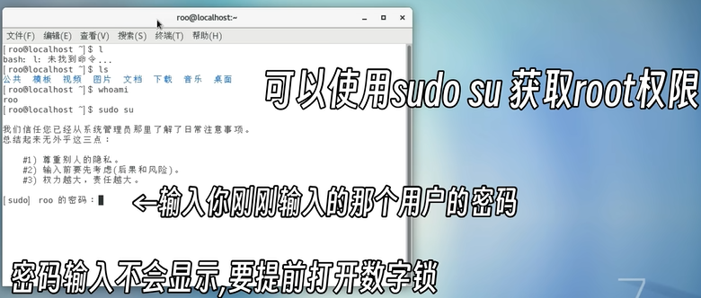

CentOS
下载
安装
语法
创建文件夹
移动文件
删除文件/文件夹
改名
查看内核
Shell命令
获得root权限

安装依赖

安装图形GUI
命令行安装图形GUI
CentOS 7系统启动后怎么从命令行模式切换到图形界面模式 - 知乎 (zhihu.com)
安装rpm软件
Q
镜像源
官方镜像-CentOS
1
2
| sudo nano /etc/yum.repos.d/CentOS-Base.repo
1
|
将内容替换为以下内容：
1
2
3
4
5
6
7
8
9
10
11
12
13
14
15
16
17
18
| [base]
name=CentOS-$releasever - Base
baseurl=http://mirror.centos.org/centos/$releasever/os/$basearch/
gpgcheck=1
gpgkey=http://mirror.centos.org/centos/RPM-GPG-KEY-CentOS-7
[updates]
name=CentOS-$releasever - Updates
baseurl=http://mirror.centos.org/centos/$releasever/updates/$basearch/
gpgcheck=1
gpgkey=http://mirror.centos.org/centos/RPM-GPG-KEY-CentOS-7
[extras]
name=CentOS-$releasever - Extras
baseurl=http://mirror.centos.org/centos/$releasever/extras/$basearch/
gpgcheck=1
gpgkey=http://mirror.centos.org/centos/RPM-GPG-KEY-CentOS-7
|
保存文件并退出。清理YUM缓存并重建缓存
1
2
3
| sudo yum clean all
sudo yum makecache
sudo yum update
|
国内镜像源-阿里
如果你在国内，使用国内的镜像源通常可以提供更快和更稳定的访问速度。以下是如何配置阿里云镜像源：
更新YUM仓库源为阿里云镜像源：
1
| sudo nano /etc/yum.repos.d/CentOS-Base.repo
|
将内容替换为以下内容：
1
2
3
4
5
6
7
8
9
10
11
12
13
14
15
16
17
18
19
20
21
22
23
24
25
| [base]
name=CentOS-$releasever - Base - mirrors.aliyun.com
baseurl=http://mirrors.aliyun.com/centos/$releasever/os/$basearch/
gpgcheck=1
gpgkey=http://mirrors.aliyun.com/centos/RPM-GPG-KEY-CentOS-7
[updates]
name=CentOS-$releasever - Updates - mirrors.aliyun.com
baseurl=http://mirrors.aliyun.com/centos/$releasever/updates/$basearch/
gpgcheck=1
gpgkey=http://mirrors.aliyun.com/centos/RPM-GPG-KEY-CentOS-7
[extras]
name=CentOS-$releasever - Extras - mirrors.aliyun.com
baseurl=http://mirrors.aliyun.com/centos/$releasever/extras/$basearch/
gpgcheck=1
gpgkey=http://mirrors.aliyun.com/centos/RPM-GPG-KEY-CentOS-7
[centosplus]
name=CentOS-$releasever - Plus - mirrors.aliyun.com
baseurl=http://mirrors.aliyun.com/centos/$releasever/centosplus/$basearch/
gpgcheck=1
enabled=0
gpgkey=http://mirrors.aliyun.com/centos/RPM-GPG-KEY-CentOS-7
|
参考：
原文链接：https://blog.csdn.net/g310773517/article/details/140321025